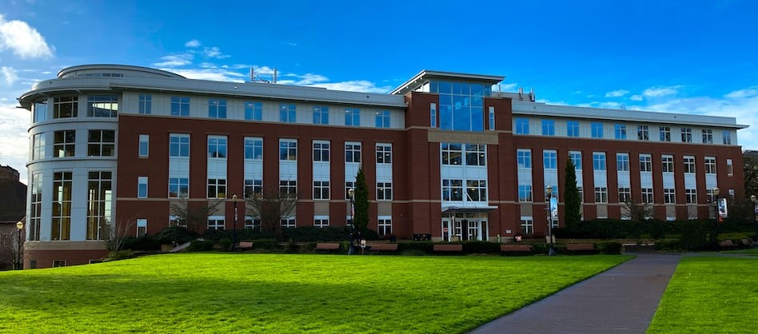

WELCOME

The S.M. College of Arts & Science was established by the benevolent philanthropist
Thiru S.Sundarraj, the Chairman of education Trust, chennai.
This trust was established in 1984-1985 under the Chairmanship of Thiru S.Sundarraj.
The first educational institution originated from the trust was National Engineering College.
The Chairman decided to start a self-financing Arts & Science College in the style and name of
S.M. College of Arts & Science (Co-Education). The College is being constructed in the land of
10 acres and 5.5 cents in chennai on the National High ways NH7 at a distance of about 4KM from
chennai, amidst a good surroundings in the rural area. The aim of this institution is to impart
higher education to economically poor students in the vicinity of Chennai. The Government of
Tamil Nadu has granted permission to start this Co-Educational institution in the year 1997-1998
vide its Order No. MS. 315 dated 13.06.1997. The College started functioning from 29-08-1997.
Now, our college has completed 2 decades of academic service to rural students.